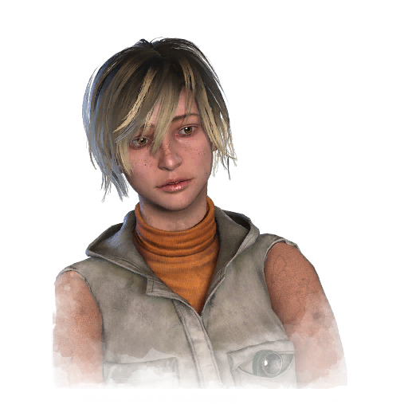

谢丽尔·梅森 Cheryl Mason
- 性别
- 女性
- 出身
- 美国人
- 演员
- Undisclosed Voice Actress
背景故事
体贴而冲动的前"希瑟"——瑟尔丽·梅森，在养父哈里·梅森tragically离世后，试图重建自己的人生。她虽已挣脱那个自出生起便一路追逐她的宗教邪教，却始终被父亲之死的负罪感束缚。每到夜晚，黑暗便以可憎的噩梦之名惩罚着她。为了让良心好过一些，她主动到一家服务问题青少年的危机干预中心担任志愿者。三个月后，她以全优成绩通过培训，无需监督便能接听危机热线。然而，再充分的准备也无法让她应对第一通来电。她听到的只有沙沙的静电声。空气骤然浓稠起来，黑色的烟气从地面升起，紧接着，她听见了一个女人的声音——一个她以为自己永远不会再听见的人。"你为何眷恋这个腐朽的世界？你知道唯有上帝才能拯救我们。"不可能是她——克劳迪娅已经死了。刹那间，天旋地转，她双膝一软跪倒在地，胃里翻江倒海。滚烫的胆汁顺着喉咙上涌，她把温热的血呕在了地板上。随后那眩晕来得如它骤起一般飞快。瑟尔丽抬起头，发现自己已身在别处——一个冰冷而绝望的地方。
专属技能
通用技能 任意逃生者均可使用
寻宝专家
Artefact Hunter
执念之缚
Bound by Obsession
黑暗感知
Dark Sense
坚持到底
Down to the Last
似曾相识
Déjà Vu
希望
Hope
同族
Kindred
最后站立
Last Standing
轻装上阵
Lightweight
不抛弃任何人
No One Left Behind
过度自信
Overconfidence
掠夺者直觉
Plunderer's Instinct
预兆
Premonition
韧性
Resilience
滑溜之躯
Slippery Meat
小猎手
Small Game
背脊发凉
Spine Chill
这不是真的
This Is Not Happening
硬跑者
Tough Runner
我们能行
We'll Make It
求生意志
Will to Live
附加品
- 暂无数据。